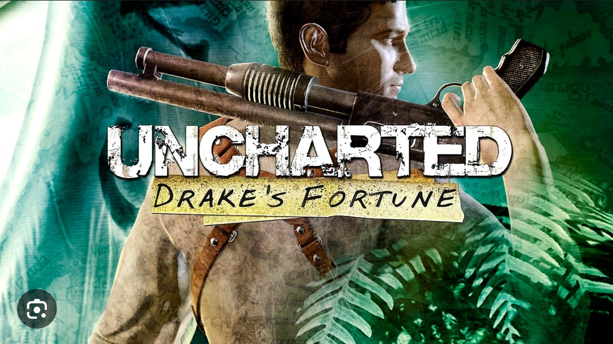
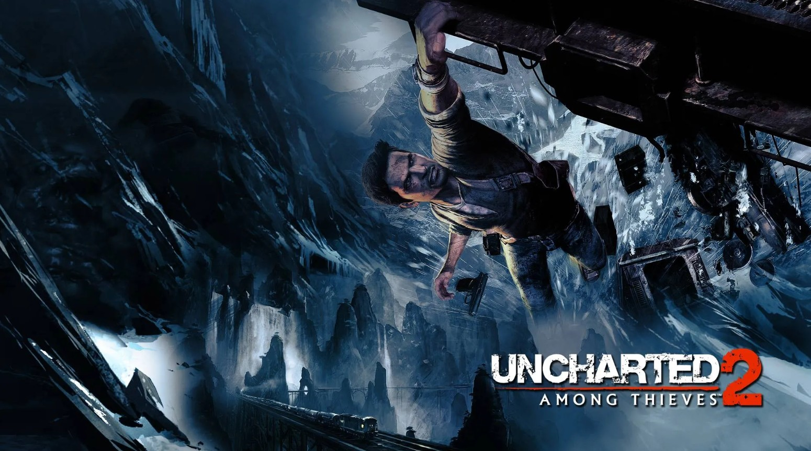
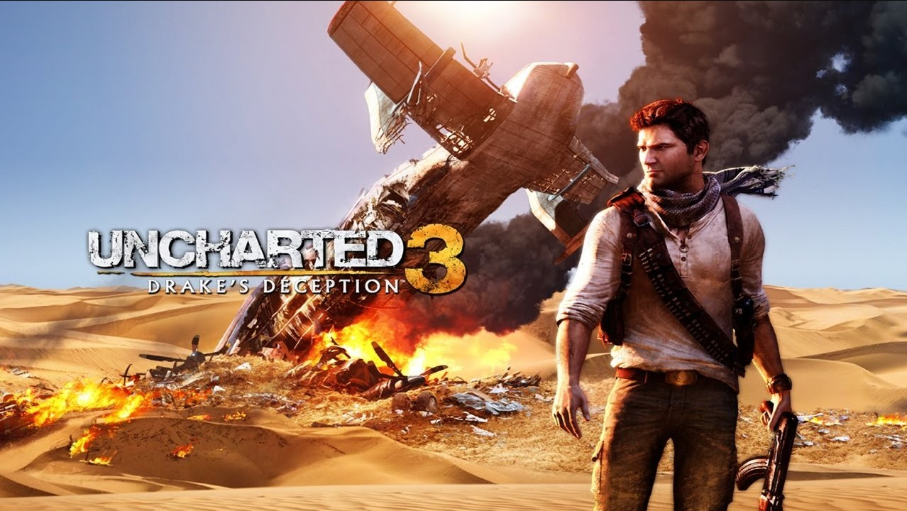
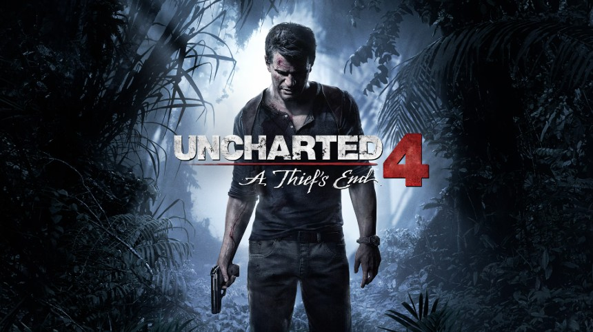
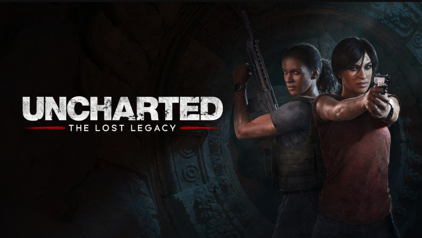

Uncharted: Drake's Fortune
The adventure that started it all. Nathan Drake discovers that Sir Francis Drake faked his own death and left a clue to El Dorado. What follows is a race through South American jungles against a ruthless mercenary army.
El Dorado is not a city of gold but a cursed idol — a sarcophagus that transforms people into feral creatures. Nazi soldiers found it in WWII and died trying to control it. Nate destroys the idol and escapes with Elena as the island collapses. The game introduced all the franchise hallmarks: witty banter, cinematic set-pieces, and cover-based action.


Uncharted 2: Among Thieves
Widely regarded as one of the greatest games ever made. Nate is recruited for a museum heist that spirals into an epic search for Marco Polo's lost fleet and the mythical Cintamani Stone of Shambhala.
The Cintamani Stone is not a gem but the resin of the Tree of Life, granting superhuman power. Villain Lazarević seeks it for world domination. Nate destroys the tree, stopping him. The moving train sequence is still cited as one of gaming's greatest set-pieces. The game won over 200 GOTY awards and sold 6 million copies.
Uncharted 3: Drake's Deception
A globe-spanning adventure that delves into Nate's backstory. From a London pub brawl to the deserts of Yemen, Drake hunts the lost city of Iram of the Pillars while a secret society called the Hermetic Order hunts him.
Iram is real but its waters cause hallucinations and madness. Marlowe sought to weaponize the supply to control world leaders. Highlights include a burning chateau escape, a sinking cruise ship, and a cargo plane crash in the Sahara — some of the franchise's most technically impressive set-pieces.


Uncharted 4: A Thief's End
The conclusion to Nathan Drake's story. Three years after retiring, Nate is pulled back by his brother Sam — believed dead for fifteen years — to find Libertalia, the legendary pirate utopia, before Rafe Adler gets there first.
Libertalia was a real pirate colony founded by Henry Avery and others in Madagascar. Greed tore it apart and the pirates killed each other. Sam's debt was fabricated by Rafe. Elena discovers Nate's lie. They reconcile, defeat Rafe in the ruins, and finally retire. The epilogue — years later with their daughter Cassie — is one of gaming's most emotional endings.
Uncharted: The Lost Legacy
A standalone game following Chloe Frazer and Nadine Ross as they recover the Tusk of Ganesh from a warlord in India's Western Ghats — and Chloe confronts the legacy of her archaeologist father.
The game recreates actual Hoysala temple architecture with stunning accuracy and weaves the Tusk of Ganesh into real Hindu mythology. It proved Uncharted could work brilliantly beyond Nathan Drake. The Lost Legacy was later included with the Legacy of Thieves Collection alongside UC4.

| Game | Year | Platform | Setting | Metacritic |
|---|---|---|---|---|
| Drake's Fortune | 2007 | PS3 | South America | 88 |
| Among Thieves | 2009 | PS3 | Nepal / Tibet | 96 ★ |
| Drake's Deception | 2011 | PS3 | Arabia / Syria | 92 |
| A Thief's End | 2016 | PS4 | Madagascar | 93 |
| The Lost Legacy | 2017 | PS4 | India | 84 |